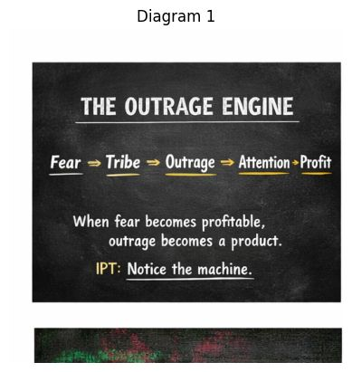

Fear → Tribe → Outrage → Attention → Profit

This diagram is the mechanics of outrage as a system. Not a conspiracy diagram, more like a supply chain for attention. Each stage feeds the next, the way gears mesh in an engine. ⚙️
Let’s walk through the chain.
Fear is the ignition spark.
Human brains evolved to react strongly to threats. When a message hints at danger, loss, invasion, collapse, or humiliation, attention spikes instantly.
Examples of fear triggers:
Fear narrows perception and speeds up reactions. The nervous system shifts toward fight-or-flight.
The engine has now started.
Once fear appears, the mind searches for allies and enemies.
Humans are tribal creatures. Under stress we instinctively divide the world into:
The tribe offers psychological safety. But it also simplifies reality. Complex issues become team competitions.
At this stage, identity becomes armor.
Fear plus tribe creates moral outrage.
Outrage feels powerful because it combines:
It also spreads extremely fast online because it is emotionally contagious. People share outrage posts to signal loyalty to their tribe.
Outrage is the engine’s high-octane fuel.
Here the system becomes economic.
Outrage grabs attention better than calm discussion. Platforms reward whatever keeps people looking, clicking, commenting, and arguing.
Attention becomes measurable:
The outrage content rises in visibility because the system interprets emotional reaction as success.
Attention converts into money and influence.
More engagement means:
At this point the engine becomes self-reinforcing. If outrage produces attention and attention produces profit, then the system naturally produces more outrage content.
Not because someone planned it perfectly, but because the incentives push it there.
“When fear becomes profitable, outrage becomes a product.”
This is the key insight.
Outrage is no longer just an emotional reaction. It becomes a manufactured commodity that travels through media systems.
The final line:
IPT: Notice the machine
That line is important because the system loses power once people recognize the pattern.
Awareness interrupts the chain:
Fear → Tribe → Outrage → Attention → Profit
Instead of continuing the cycle, awareness creates a fork in the road.
The moment someone says,
“Wait… this is trying to trigger outrage,”
the gears slip. The engine sputters.